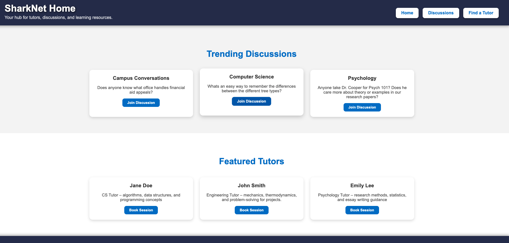
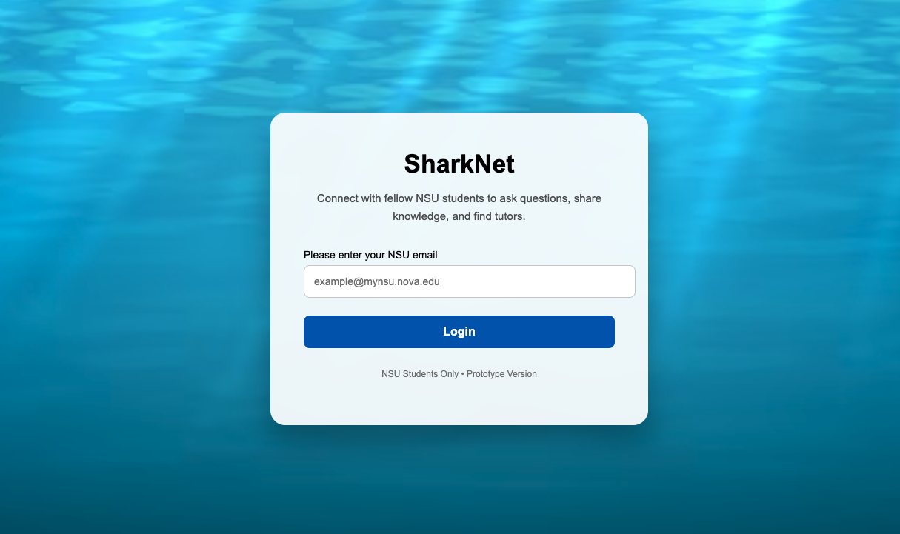
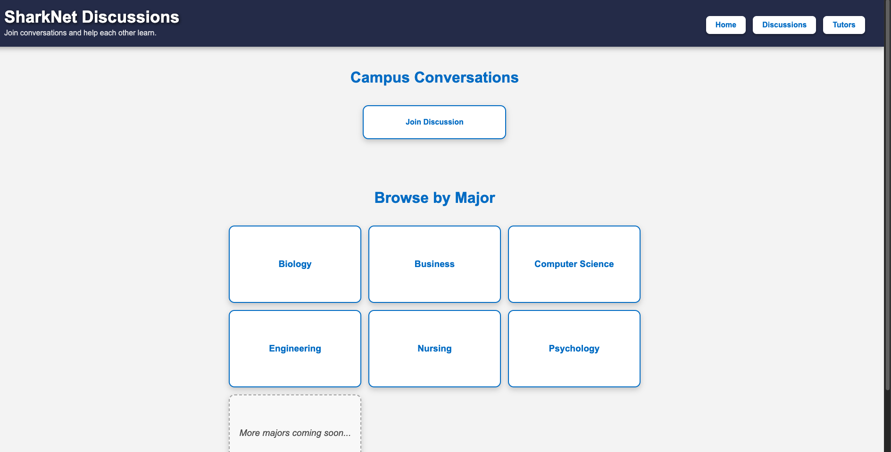
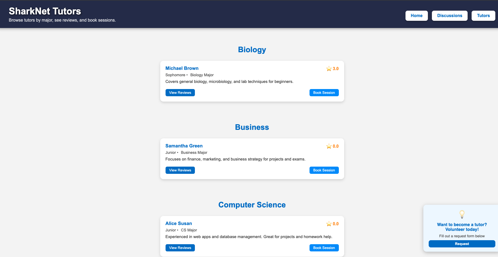

The Problem
NSU students often have school-specific questions about classes, professors, assignments, tutoring, and campus resources, but those answers are usually scattered across group chats, friends, or informal conversations.
The goal was to create a centralized student-only platform where students could ask questions, browse discussions by major, and find peer support without relying on disconnected communication channels.
The Solution
SharkNet was built as a centralized academic support platform where NSU students can log in with their school email, explore trending discussions, browse by major, and connect with tutors.
The project was developed using an Agile workflow — broken into weekly sprints where the team committed to delivering tangible progress every week. Each sprint had a defined goal, whether that was completing a feature, resolving a bug, or pushing a working deployment update.
The project combined frontend implementation, backend routing, database-backed user flows, deployment troubleshooting, and team collaboration through GitHub.

Platform Features
The project was designed as more than a static site. It acts as a student support system with academic discovery, tutoring access, and discussion workflows.
Tech Stack
Challenges
- Creating a student-only login flow that made the platform feel secure and school-specific
- Structuring discussions, tutors, and major categories so the experience stayed easy to navigate
- Coordinating changes through GitHub while working in a collaborative Agile team environment across weekly sprints
- Troubleshooting deployment issues and making sure the app worked consistently on Render
- Connecting frontend pages with backend routes and database-supported workflows
- Maintaining sprint velocity and ensuring every weekly cycle closed with a shippable result
Agile Development Process
SharkNet was managed entirely through an Agile framework. Rather than building everything at once, the team operated in weekly sprints — each one ending with a working, reviewable output. This kept momentum high and made it easy to catch problems early before they compounded.
Every week had a clear focus: one sprint might be dedicated to getting the login flow working end-to-end, another to wiring up the database, another to deployment stability on Render. This sprint structure meant we were always shipping something, never spinning in place.
Results
- Delivered a working deployed prototype for an NSU-focused student support platform
- Executed the full project in weekly Agile sprints, producing tangible results every single week
- Created separate flows for login, discussions, tutor browsing, and major-based support
- Practiced full project workflow using GitHub, backend logic, database concepts, and deployment
- Strengthened collaboration, debugging, and technical problem-solving in a team setting
Platform Preview


